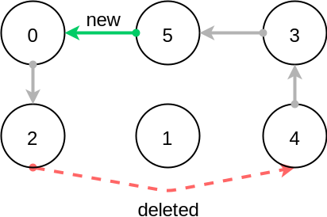

Part 5: Circuit Constraint, TSP, Optimization, LNS, and VRP¶
We ask you not to publish your solutions on a public repository. The instructors interested to get the source code of our solutions can contact us.
Slides¶
Theoretical Questions¶
Circuit Constraint¶
The Circuit constraint enforces a Hamiltonian circuit on a successor array. In the following example, the successor array a=[2,4,1,5,3,0] has for each index i (0 ≤ i ≤ 5) a directed edge that goes from node i to node a[i]:

All the successors must be different. However, enforcing just an AllDifferent constraint is not enough as we must also guarantee that a proper Hamiltonian circuit (without sub-circuits) is formed. This can be done efficiently and incrementally by keeping track of any partial paths (non-closed circuits) that appear during search. Note that each node is on at most one partial path. For your implementation, use the following arrays of stateful integers as the data structure to keep track of the partial paths:
IntVar [] x;
StateInt [] dest;
StateInt [] orig;
StateInt [] lengthToDest;
where:
dest[i] is the last (non-fixed) node that can be reached from node i if node i is fixed and on a partial path; otherwise it is i;
orig[i] is the first (fixed) node that can reach node i if node i is on a partial path; otherwise it is i;
lengthToDest[i] is the length of the partial path from node i to node dest[i] if node i is on a partial path; otherwise it is 0.
Consider the following example where edges originating from fixed nodes are colored grey:
Before node 5 has been fixed, the green edge has not yet been added, so we have:
dest = [2,1,2,5,5,5];
orig = [0,1,0,4,4,4];
lengthToDest = [1,0,0,1,2,0];
After node 5 has been fixed, the green edge has been added, so we have:
dest = [2,1,2,2,2,2];
orig = [4,1,4,4,4,4];
lengthToDest = [1,0,0,3,4,2];
In your implementation, you must update the stateful integers in order to reflect the changes after the addition of new edges to the circuit. An edge is added whenever a node becomes fixed: you can use the CPIntVar.whenBind(…) method to run some code block when this event occurs.
The filtering algorithm is to prevent closing each partial path that would have a length less than n (the total number of nodes) as that would result in a non-Hamiltonian circuit. Since node 4 (the origin of a partial path) has a length to its destination (node 2) of 4 (<6), the destination node 2 cannot have the origin node 4 as a successor and the red edge is deleted. This filtering was introduced in [TSP1998] for solving the traveling salesperson problem (TSP) with CP.
Implement a propagator Circuit.java. Check that your propagator passes the tests CircuitTest.java.
- TSP1998
Pesant, G., Gendreau, M., Potvin, J. Y., & Rousseau, J. M. (1998). An exact constraint logic programming algorithm for the traveling salesman problem with time windows. Transportation Science, 32(1), 12-29.
Custom Search for TSP¶
Modify TSP.java in order to implement a custom search strategy. Use the following as skeleton code:
DFSearch dfs = makeDfs(cp, () -> {
IntVar xs = selectMin(succ,
xi -> xi.size() > 1, // filter
xi -> xi.size()); // variable selector
if (xs == null)
return EMPTY;
int v = xs.min(); // value selector (TODO)
return branch(() -> cp.post(equal(xs, v)),
() -> cp.post(notEqual(xs, v)));
});
The selected unfixed variable is one with the smallest domain (first-fail).
The selected variable is then fixed to the minimum value in its domain.
This value selection strategy is not well-suited for the TSP, and for the vehicle routing problem (VRP) in general. The one you design should be more similar to the decision you would make in a greedy algorithm. For instance, you can select as a successor for xi a closest city in its domain.
Hint: Since there is no iterator on the domain of a variable, you can iterate from its minimum value to its maximum one by using a for loop and checking that the value of the current iteration is in the domain using the contains method. You can also use your iterator from Part 2: Domains, Variables, Constraints.
You can also implement a min-regret variable selection strategy: it selects a variable with the largest difference between a closest successor city and a second-closest one. The idea is that it is critical to decide the successor for this city first, because otherwise one will regret it the most.
Observe the first solution obtained to the provided instance and its objective value: is it better than upon naive first-fail? Also observe the time and number of backtracks necessary for proving optimality: by how much did you reduce the computation time and number of backtracks?
LNS Applied to TSP¶
Implement and apply large-neighborhood search (LNS) by modifying TSP.java.
What you should do:
Record the current best solution. Hint: Use the onSolution call-back on the DFSearch object.
Implement a restart strategy fixing randomly 10% of the variables to their value in the current best solution.
Each restart has a failure limit of 100 backtracks.
An example of LNS is given in QAPLNS.java. You can simply copy/paste/modify this implementation for the TSP:
Does it converge faster to good solutions than the standard DFSearch? Use the instance with 26 nodes.
What is the impact of the percentage of variables relaxed (experiment with 5%, 10%, and 20%)?
What is the impact of the failure limit (experiment with 50, 100, and 1000)?
Which parameter setting works best? How did you choose it?
Imagine a different relaxation specific to this problem. Try and relax the variables that have the strongest impact on the objective with a greater probability (the choice of relaxed variables should still be somehow randomized). You can for instance select a subset of cities with the largest distance to their successor and permit those cities to be reinserted anywhere in the circuit. This requires keeping the relaxed cities (those that are to be reinserted) within the domains of the successor variables of the non-relaxed cities.
From TSP to VRP¶
Create a new file called VRP.java working with the same distance matrix as the TSP but assuming that there are now k vehicles (make it a parameter and experiment with k=3). The depot is the city at index 0, and every other city must be visited exactly once by exactly one of the k vehicles:
Variant 1: Minimize the total distance traveled by the three vehicles.
Variant 2 (advanced): Minimize the longest distance traveled by the three vehicles (in order to be fair among the vehicle drivers).
You can also use LNS to speed up the search.

{kind=link}